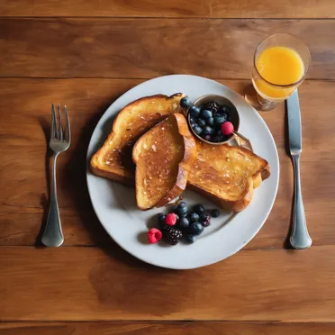
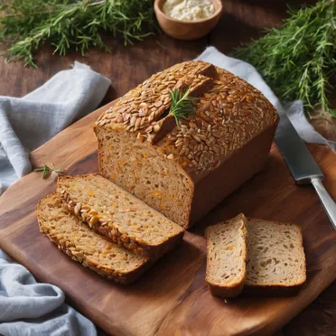
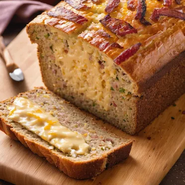
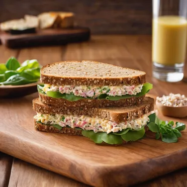
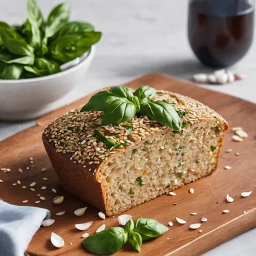

手作的溫度，遇見咖啡的香氣，讓每一天都充滿儀式感。
午後的陽光灑落在窗台上，捧一杯香濃的咖啡，輕咬一口鬆軟的手作麵包，彷彿時間在這一刻靜止。讓這份愜意，成為你忙碌生活中的小確幸。每一口都是一幅畫，每一杯都是一首詩，在平凡的日子裡，尋找屬於自己的小美好。
手沖咖啡~藝術創作手沖咖啡是一門藝術。咖啡師就像一位畫家，用熱水在濾紙上勾勒出一幅幅味覺的畫作。不同的水溫、不同的沖泡手法，都會產生截然不同的風味。一杯好的手沖咖啡，不僅能滿足味蕾，更能觸動心靈。 |
|
|  |
巴黎風法國土司~奢華的饗宴巴黎風法國土司，是一場奢華的味覺盛宴。厚切的吐司浸泡在香濃的蛋液中，再裹上一層薄薄的糖粉，彷彿一位盛裝出席舞會的貴婦。每一口都充滿了奶油的濃郁香氣，讓人想起巴黎宮殿裡的甜點。 |
|  |
全麥土司~樸實的堅韌全麥土司就像一位樸實無華的農夫，有著黝黑的皮膚和結實的肌肉。它承載著大地最原始的力量，每一口都散發著麥子的清香和泥土的芬芳。它或許不像白吐司那般柔軟細緻，卻有著堅韌不拔的性格，給人一種踏實的安全感。 |
|  |
培根起士雜糧麵包~鹹香的誘惑培根起士雜糧麵包就像一個充滿誘惑力的陷阱，一旦品嚐過它的美味，就再也無法抗拒。鹹香的培根、濃郁的起司、香脆的麵包，每一口都讓你欲罷不能。 |
|  |
起士鮪魚雜糧麵包~味蕾的驚喜起士鮪魚雜糧麵包是一場味覺的驚喜。鹹香的鮪魚、濃郁的起司、以及雜糧麵包的嚼勁，在你的口腔中碰撞出奇妙的火花。每一口都是一次新的體驗。 |
|  |
蒜香羅勒雜糧麵包~田園詩篇蒜香羅勒雜糧麵包就像一首田園詩篇，每一口都充滿了陽光、泥土和青草的氣息。羅勒的清香如夏日微風拂過臉頰，蒜香的濃郁如大地母親的懷抱，雜糧的樸實則如農夫的雙手，將一切美好揉捏在一起。 |